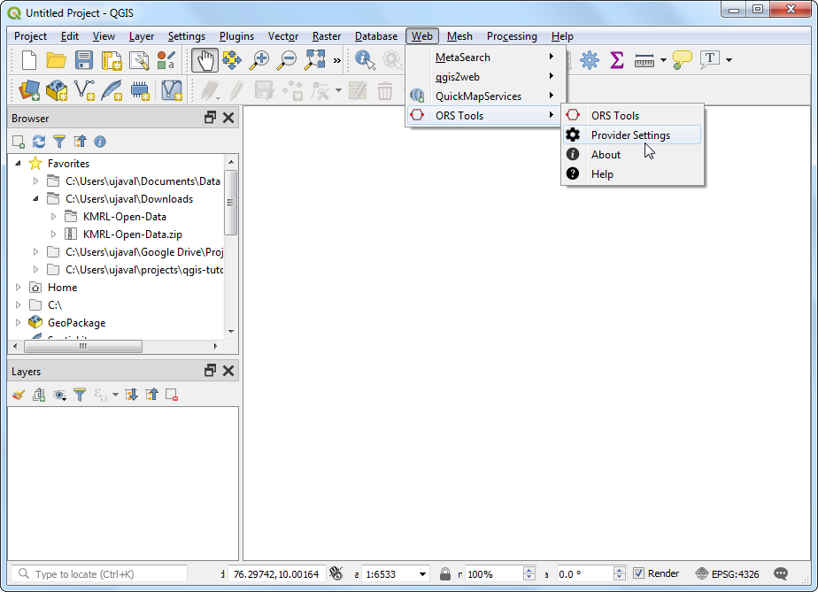
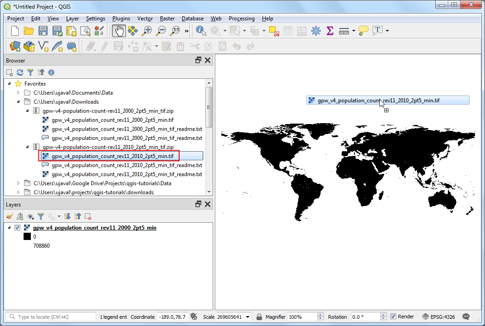
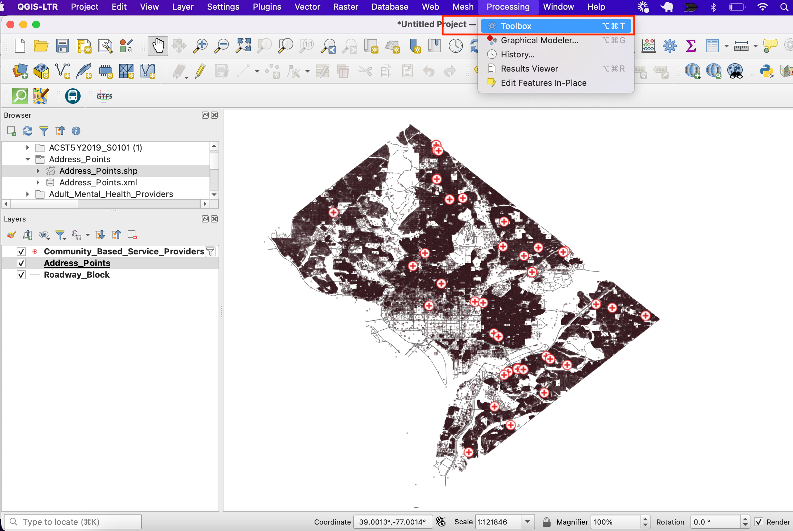

Einzugsgebietsanalyse mit dem Openrouteservice (QGIS3)¶
Die Einzugsgebietsanalyse ist hilfreich, um die Erreichbarkeit von Standorten auszuwerten. Mit einem gegeben Standort von Feuerwehren, Krankenhäusern, Stationen des öffentlichen Personenverkehrs usw. kann mit Hilfe der Analyse bestimmt werden, welche Gebiete in Abhängigkeit von der aufzuwendenden Zeit oder Strecke bedient werden können. Bis vor kurzem waren solche Analysen mit Hilfe von Open-Source-Tools und freien Daten schwierig. Doch jetzt haben wir durch OpenStreetMap (OSM) Zugriff auf ein globales Straßennetzwerk und freie Webdienste wie Openrouteservice (ORS), der komplexe Routingaufgaben unter Nutzung von OpenStreetMap (OSM) Daten ausführen kann. In diesem Tutorial nutzen wir das ORS Tools Plugin, um eine Einzugsgebietsanalyse mit QGIS durchzuführen.
Überblick über die Aufgabe¶
Wir nutzen die U-Bahn Stationen der Stadt Kochi (Indien), um das Gebiet zu bestimmen, von dem aus eine Station in 15 Minuten zu Fuß erreicht werden kann.
Weitere Fähigkeiten die wir erlernen¶
Wie man Daten im digitalen Austauschformat General Transit Feed Specification (GTFS) in QGIS lädt.
Wie man eine Reihe von Punktdaten in Linien mit Hilfe des Tools Points to Path konvertiert.
Beschaffung der Daten¶
Kochi Metro Rail Limited (KMRL) stellt frei verfügbare Daten für die U-Bahn in Kochi im Format Global Transit Feed Specification (GTFS-static) bereit. Die Daten können zum download auf der Seite Open Data abgefragt werden.
Der Einfachheit halber können wir eine Kopie des Datensatzes unter folgendem Link herunterladen:
Datenquelle [KMRL]
Einrichtung¶
Openrouteservice API stellt Routingalgorithmen bereit, die mit freien geographischen Daten wie z.B. OpenStreetMap arbeiten. Es handelt sich um einen freien webbasierten Service, auf den mit einem QGIS Plugin zugegriffen werden kann. Obwohl der Service frei ist, ist eine Registrierung zum Erhalt eines API-Schlüssels erforderlich. Der API-Schlüssel dient dazu, Missbrauch zu verhindern und beschränkt die Nutzung.
Gehe zur Seite Openrouteservice Sign Up und erstelle einen Account. Nachdem der Account aktiviert wurde, besuche die Seite Dashboard und fordere ein Token an. Wähle
Freeals the Token type und gebeORS Tools QGISals Token name ein. Klicke auf CREATE TOKEN.

Nach der Erstellung kopieren wir die lange Zeichenkette unter
Key. Das ist der eindeutige mit dem Account verbundene Identifikator der zur Autorisierung des Services verwendet wird.

Öffne QGIS. Gehe zu . Suche nach dem Plugin ORS Tools und installiere es. Klicke auf Schließen.

Gehe im QGIS Hauptfenster zu .

Erweitere den Bereich openrouteservice und kopiere den
Schlüssel(aus Schritt 2) in das Textfeld API Key. Klicke auf OK.

Arbeitsablauf¶
Entpacke die heruntergeladenen Daten
KMRL-Open-Data.zipin ein lokales Verzeichnis. Jede Datei enthält Daten für verschiedene Teile des Verkehrssystems. Das Dateiformat und die Verwendung der einzelnen Dateien ist unter GTFS Reference beschrieben. Die für uns interessanten 2 Dateien enthalten räumliche Daten. Die Dateishapes.txtenthält Punkte die den Pfad eines Fahrzeuges beschreiben und die Dateistops.txtenthält den Standpunkt der Haltestellen. Beide CSV-Dateien können nach QGIS importiert werden. Klicke auf den Knopf Datenquellenverwaltung öffnen.

Im Dialogfenster Data Source Manager gehen wir zum Feld Getrennte Texte. Klicke auf den Knopf … neben Dateiname und öffne die Datei
shapes.txt. WähleCSV (comma separated values)als Dateiformat. Das X-Feld und das Y-Feld sollten automatisch gefüllt sein. Klicke auf Hinzufügen.

Klicke nocheinmal auf den Knopf … und wähle die Datei
stops.txt. Klicke auf Hinzufügen und danach auf Schließen.

Wir sehen 2 neue Layer
stopsundshapes, die im Layer Bereich angezeigt werden. Wir werden jetzt denshapesPunktlayer in einen Linienlayer konvertieren. Er repräsentiert den Verlauf der U-Bahnlinie. Gehe zu .

Suche das Tool und klicke doppelt darauf, um es zu starten.

In the Points to Path dialog, select
shapesas the Input point layer. As per GTFS specifications, each individual route has a uniqueshape_idso select that from the drop-down menu as the Path group expression. We can also specify the order of points that will form the line by selectingshape_pt_sequenceas the Order expression. Click Run.

Ein neuer Layer
Pfadewird im Bereich Layer hinzugefügt. Wir können die Sichtbarkeit des Layersshapesabschalten, um den neu hinzugefügten Layer zu sehen.

Jetzt wo wir die U-Bahnstationen und die Linie hinzugefügt haben, können wir mit der Netzwerkanalyse beginnen. Unter Verarbeitungswerkzeuge suchen wir das Tool . Klicke doppelt darauf, um es zu starten.

Wir wählen
openrouteserviceals Provider. Wir werden das Gebiet in 15-minütiger fußläufiger Reichweite zu jeder U-Bahnstation ermitteln. Wählestopsals Input Point Layer undstop_idals Input Layer ID Field. Im Dropdown-Menü Travel mode wählen wirfoot-walking. Da wir an der zeitbasierten Fläche interessiert sind, wähletimeals Dimension. Zum Schluss geben wir15Minuten als ranges vor. Klicke auf Starte.

Bemerkung
Beachte, dass die Openrouteservice API ein Limit von 20 Anfragen je Minute hat. Wenn ein Layer mehr als 20 Punkte hat, erscheinen unter Umständen Fehlermeldungen wegen Überschreitung des Limits. Man kann das Tool weiter laufen lassen, es setzt die Verarbeitung mit 20 Punkten je Minute fort.
Nach Beendigung der Berechnung sehen wir einen neuen Layer
Isochrones, der im Layer Bereich geladen wurde. Zu jedem Punkt wurde ein Polygon erzeugt, dass das Gebiet in 15-minütiger fussläufiger Reichweite darstellt. Um das Ergebnis im Kontext mit den zur Erstellung verwendeten Quelldaten zu sehen, fügen wir eine OpenStreetMap Basiskarte hinzu. Wir scrollen im Browser Bereich nach unten und ziehen in den Arbeitsbereich.

Ein neuer Layer
OpenStreetMapwird im Layer Bereich angezeigt. Ziehe den Layer im Layerbereich ganz nach unten. Wir können hinein- und hinauszoomen, um zu sehen, ob das Ergebnis zum Straßennetzwerk passt. Wir sehen, dass die Polygone nicht kreisförmig sind, da die Reisezeit entlang der Straßen berechnet wird. In Regionen mit wenigen Straßen wird eine kleinere Fläche ausgewiesen.

Um das Einzugsgebiet zu berechnen, müssen wir eine letzte Arbeit ausführen. Wir fügen die einzelnen isochron-Polygone zu einem Polygon zusammen, das die erreichbare Fläche repräsentiert. Suche das Tool .

Wähle
Isochronesals Eingabelayer und klicke auf Starte.

Nach Fertigstellen der Berechnung wird ein neuer Layer
Aufgelöstim Layer Bereich angezeigt. Dieses Polygon repräsentiert die Fläche, die mit einem 15-minütigen Fußweg von der U-Bahn aus erreichbar ist.

Bemerkung
Das ist ein einfaches Beispiel für eine Einzugsgebietsanalyse eines öffentlichen Verkehrsmittels in QGIS. Eine umfassendere Einzugsgebietsanalyse der U-Bahn würde andere Verkehrsmittel einschließen. Wir könnten Zubringerbusse, nahe gelegene Bushaltestellen und Linien mit Anbindung an die Haltestellen berücksichtigen. Wir könnten auch andere Verkehrsmittel wie das Auto oder Taxi berücksichtigen.